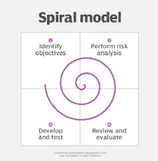

Informatik Noter
HyperText Markup Language (html) er et opmærkningssprog, der primært har til formål at få tekst og billeder på en hjemmeside til at virke som links til andre HTML-sider. Markup betyder at opmærke, og HTML bruges til at strukturere hjemmesider og bestemme udseendet.

Spiral modellen bruges til at udvikle en hjemmeside/software.
Det er en måde hvor man kan registrere oplysninger og finde dem igen ved specifikke søgninger.
Mineprojekt og overvejelser
Vi brugte spiral modellen til at udvikle et projekt, hvor vi ville lave en info skærm til slotshaven.
Slotshaven oversigt design:
Overskrift, event banner (højre), kantine stock banner (venstre), roller (bunden) beskeder til hele skolen, kort over skolen Centralt.
Farver skal være hvide, orange og stort ligsom slotshavens logo. Målgruppen er skolens elever og folk som navigerer på skolen.
Persona:
En 2.G's HTX elev ved navn Emil, er en træt og doven elev som trænger til en energidrik og gerne vil vide hvor lokale 23 ligger og hvilke ting der rører sig på skolen.
Jeg har valgt at have meget whitespace på siden da det holder fokusset på indholdet.
Jeg har givet hver side en farve og jeg repiterer de farver.